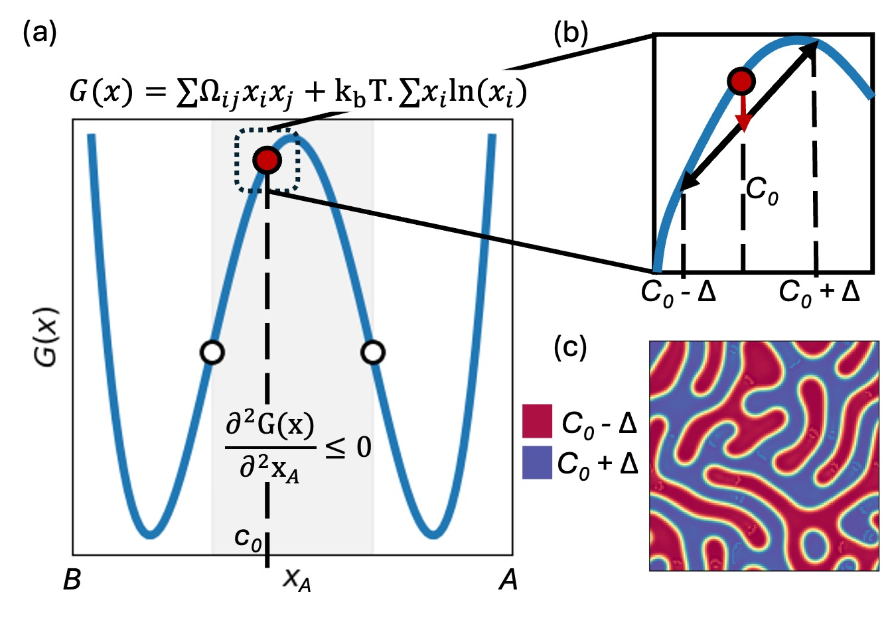
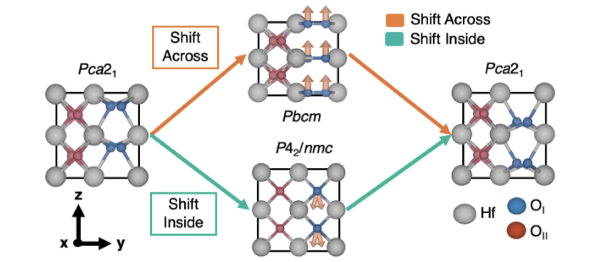
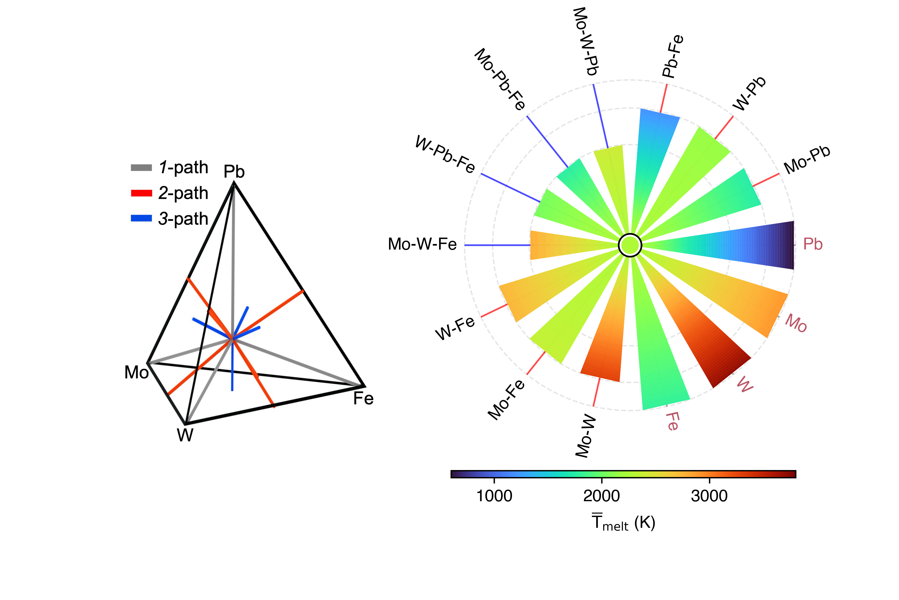
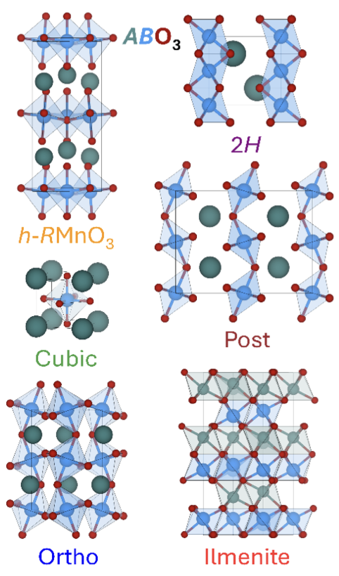

R.01
High-dimensional alloy phase diagrams
Rapid composition–temperature predictions for multicomponent alloys using first-principles thermodynamics and machine learning.
Computational materials science · St. Louis
I’m Pravan Omprakash, a PhD candidate at Washington University in St. Louis. I build computational methods that connect atomic-scale calculations to real-world materials design.
PhD CandidateMaterials Science
Washington UniversitySt. Louis, Missouri
Research focusOrder, disorder & design
raptor.engr.wustl.edu
A dedicated research website bringing together the methods, software, visualizations, publications, and scientific questions developed throughout my PhD.
01 / About
My research asks a simple question with complicated answers: how can we predict—and ultimately control—the behavior of materials with many interacting components?
I combine first-principles calculations with thermodynamic models and data science to study order and disorder across metallic alloys and polar materials. The goal is to translate atomic-scale understanding into practical design rules.
I’m especially interested in high-entropy alloys, ferroelectric hafnia, scientific visualization, and machine-learning tools that help researchers navigate large materials spaces.
Beyond the lab: visit my personal siteDensity functional theory and symmetry analysis.
Phase stability, disorder, and composition–temperature landscapes.
Python workflows, visualization, and machine learning.
02 / Research
I develop computational frameworks to understand how configurational entropy, local interactions, and symmetry create useful properties.
Rapid composition–temperature predictions for multicomponent alloys using first-principles thermodynamics and machine learning.
DFT and symmetry analysis to understand how doping, strain, and interfaces control polarization in silicon-compatible oxides.
Interpretable statistical and neural models for materials, mechanical metamaterials, medical imaging, and device optimization.
03 / Open source
As lead developer for the Materials Modelling & Microscopy group, I build Python tools, interactive research systems, and reproducible computational workflows.
View group repositoriesMaterials-Modelling-Microscopy / RAPTor
Rapid Alloy Phase-field generaTOR: an integrated platform for alloy phase stability, spinodal analysis, high-dimensional Symplex maps, phase diagrams, and experimental evidence.

Materials-Modelling-Microscopy / Symplex
Symmetry-conserving polar plots for visualizing properties across high-dimensional multi-principal-element alloy spaces.
mohit-raghavendra / AuthNet
A deep-learning authentication system that combines facial identity with temporal movements captured while a user speaks a password.
Pravanop / Perovskite-Prediction
Ensemble machine-learning models for predicting and screening new perovskite compounds.
04 / Publications

Physical Review Materials · 2026

Scripta Materialia · 2025

Chemistry of Materials · 2025
05 / Conferences
Selected oral presentations, posters, and conference contributions from my research.
Rapid phase-diagram prediction for multicomponent alloys; SymPlex visualization for high-dimensional composition spaces.
Two oral presentations on SymPlex plots and rapid thermodynamic prediction of high-entropy alloy phase diagrams.
Rapid phase-diagram prediction for multicomponent alloys using first-principles thermodynamics.
Hole doping as a route to lower the coercive field of ferroelectric hafnia.
Robust deep-learning models for inverse design of complex mechanical metamaterial structures.
AuthNet: a deep-learning authentication mechanism using temporal facial-feature movements.
06 / Contact
I’m open to research collaborations, conversations about computational materials design, and opportunities where physics and data meet.
o.pravan@wustl.edu